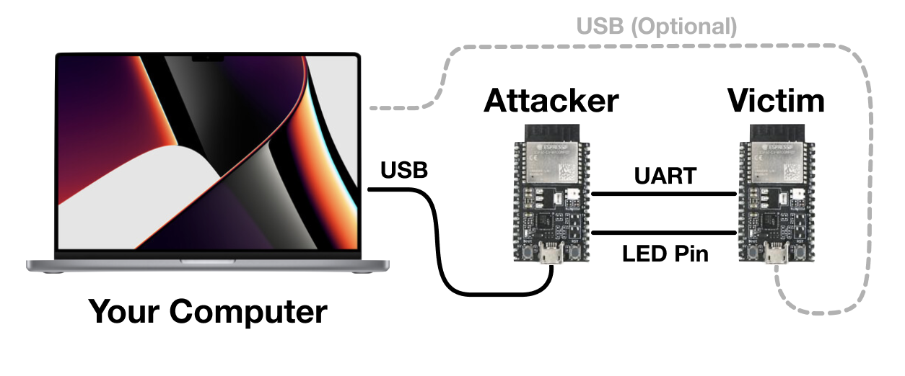
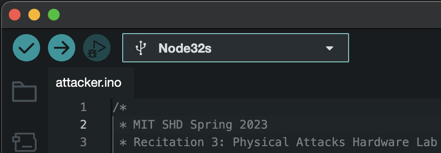

CTF of Physical Attacks
Exploiting an insecure memcmp implementation on a real microcontroller to leak a secret.

Image: Adafruit
Table of contents
- Introduction
- Prizes
- Before Class: Software Development Environment Setup
- In Class: Hardware Setup
- Warm Up: Program the Attacker Board
- Get to Know the Victim: the
memcmpVulnerability - Attack Time
Introduction
In this recitation, we will attack an ESP32 chip. ESP32 is a Wifi and Bluetooth enabled microcontroller unit (or called MCU) built on the Xtensa architecture. We will be using two of them today. One is the victim (a password checker from which we will leak the correct password), and the other is the attacker board (which you fully control). You will be writing an ESP32 program on the attacker board to leak the secret from the victim by exploiting a timing side channel.
To participate in the CTF, you will bring:
- A USB-A capable laptop setup (that is, bring your USB-C to USB-A converters!)
- The Arduinio toolchain installed (see Software Development Environment Setup)
TA will bring:
- 2x ESP32 boards, one programmed with the victim code, and one for the students to write attacker code on
- 2x USB-A to USB-Micro B cables
- A bundle of jumpers for students to use as needed
All attacks are fair game
- You can do whatever you want to these boards.
- Please try to leave them at least functional though for next year.
- Our intended bug is probably the easiest way to exploit them, but feel free to do whatever and explore!
Prizes
The first 3 teams to finish will get 1 ESP32 board per group member (the same kind we used in class today).
Before Class: Software Development Environment Setup
You need to install the appropriate board programmer files to your local PC to program the attacker microcontroller with your attack. We are using this esp32 board. It is identified in Arduino as an esp32/Node32s.
Follow the installation procedure described here. A brief summary of what you need to do:
- Download the Arduino IDE 2.0.4
- Open Preferences
- Add
https://raw.githubusercontent.com/espressif/arduino-esp32/gh-pages/package_esp32_index.jsonto Additional Boards Manager URLs - Close and reopen the Arduino app
- Open Boards Manager from Tools > Board > Board Manager…
- Search
esp32 - Install
esp32 Espressif Systems - Close and Reopen the Arduino app
- Make sure Tools > Board is set to
ESP32 Arduino/Node32s
Note
For windows users, you need to also install and configure PuTTY and the FTDI Drivers as seen here.
In Class: Hardware Setup
As a physical attack recitation, you will need to interact with hardware devices physically. Read below to understand how we communicate with the ESP32 chip using UART, and follow the instructions to wire things up.
What is UART?
How does the esp32 board communicate with the external world? Using the serial port. Serial, or UART, is an asynchronous protocol commonly used for communicating data between devices. Many consumer devices ship with exposed UART pads that transmit and receive data, which can cause many physical security vulnerabilities.
Serial consists of 3 pins: RX, TX, and ground. Ground is the same for both devices (as a general rule of thumb, ground is always common amongst everything in a system). One device’s RX connects to the other’s TX, and vice versa. RX is used for receiving, and TX is used for transmitting. See the figure below.
The most important parameter for a serial port is the baud rate, i.e., the speed at which serial communication runs. Our boards are configured to use the standard baud rate of 115200.
Test the Communication with ESP32
Let’s first test the victim’s connection with our PC to make sure everything’s working. You can attach an ESP32 to your PC using a USB cable. See detailed information here.
The first step is to find the port name on your computer.
- Open the Arduino app with no boards connected.
- Go to Tools > Port and look at the available ports.
- On macOS / Linux you will see something like
/dev/cu.Bluetooth-Incoming-Port(or maybe nothing). - On Windows you will probably see nothing, maybe a few
COMXports (Xis a number).
- On macOS / Linux you will see something like
- Plug in the victim board and reload Tools > Port and look for the new port.
- On macOS / Linux, it will be a dev file like
/dev/cu.usbserial-0001/. - On Windows, it will be something like
COM4.
- On macOS / Linux, it will be a dev file like
- Make note of the port name so we can connect to it later.
Now you can see what the victim boar is doing!
- If you’re on macOS / Linux, we can use the
screencommand to talk to the victim.screen {name from above} 115200will give you a terminal.- Press
control + A, thenK, and thenYwhen you want to exit.
- If you’re on Windows, follow the PuTTY instructions.
At first your terminal will be blank. Press the EN button on the board to reset it. You should now see some terminal output.
____ ____ _____ _________
|_ \ / _||_ _|| _ _ |
______ | \/ | | | |_/ | | \_| ______
|______| | |\ /| | | | | | |______|
_| |_\/_| |_ _| |_ _| |_
|_____||_____||_____| |_____|
___ _ _ _ ___ _
/ __| ___ __ _ _ _ _ ___ | || |__ _ _ _ __| |_ __ ____ _ _ _ ___ | \ ___ __(_)__ _ _ _
\__ \/ -_) _| || | '_/ -_) | __ / _` | '_/ _` \ V V / _` | '_/ -_) | |) / -_|_-< / _` | ' \
|___/\___\__|\_,_|_| \___| |_||_\__,_|_| \__,_|\_/\_/\__,_|_| \___| |___/\___/__/_\__, |_||_|
|___/
Ravi's Super-Secure Password Checker(TM)
Enter your Password >
You can type in guessed passwords, and it will tell you if you are correct or not. You should see the light flash and a result printed to the console. Here’s an example if the correct password is MIT{this_is_a_secret}:
Enter your Password > MIT{incorrect_guess}
Try again.
Enter your Password > MIT{this_is_a_secret}
Correct!
Enter your Password >
Wire Up the Attack Setup
In our attack, we will use another ESP32 board as the attack board to interact with the victim board and monitor the victim’s timing behaviors. Here’s a diagram of the setup we will build:

We are going to attach the attacker and victim together via their secondary serial ports. Both MCUs can also attach to your laptop via USB, to power them up and to see the results of the attack. We will also attach the LED pin of the victim to the attacker so it can measure when the light turns on (more information later). The precise connnections to make depend on which type of the board you get, as follows. (Two types of board we bring label the pins differently.)
If your board has a USB-C port, connect:
Attacker.G17(G17 is TX) toVictim.G16(G16 is RX).Attacker.G16toVictim.G17.Attacker.G2toVictim.G2(G2 is the LED pin).Attacker.GNDtoVictim.GND.- Attach the attacker’s and victim’s USB ports to your computer.
If your board has a USB-Micro port, connect:
Attacker.TX2toVictim.RX2.Attacker.RX2toVictim.TX2.Attacker.D2toVictim.D2(D2 is the LED pin).Attacker.GNDtoVictim.GND.- Attach the attacker’s and victim’s USB ports to your computer.
Warm Up: Program the Attacker Board
Now you have some rough ideas about your attack plan, let’s learn how to write and upload programs to the attacker board.
Below is an example “Hello World” program for ESP32.
void setup() { // Runs once
Serial.begin(115200);
}
void loop() { // Runs forever
Serial.println("Hello, 6.5950!");
}
The setup method runs once when the board is reset. The loop method runs forever after setup completes. We will post the starter code on Piazza before the class. The provided attacker code handles setting up both serial to the computer, serial to the victim, and configuring the GPIO pins.
How to Upload Programs
- Attach the attacker MCU to your PC using a USB cable (as shown in the hardware setup).
- Ensure the correct port and board (
Node32s) are selected in Tools > Port and Tools > Board. Do not accidentally reflash the victim board.- Note that port are assigned by order of connection to the laptop, so the port name may change if you unplugged the boards and replugged them in later.
- To be safe you can make it a rule to always flash while only the attacker board is plugged in.
- Press the Upload button (it is a rightward pointing arrow). 
- Watch the output window at the bottom.
- If there are any errors, let the TA know.
- You may see the output is stuck doing
Connecting........_____....._____....._____.forever. If you see that, try holding down theBOOTbutton and trying again.
Take care to only program the attacker board. The victim board should NOT be reprogrammed ever, otherwise the secret will be lost!
Warmup Exercise
If it is the first time you program embedded systems, try upload the hello-world program to the attacker board and see the output.
With all the setup and preparation above, we can now take a close look at our victim program and start the attack!
Get to Know the Victim: the memcmp Vulnerability
The victim board reads user-supplied passwords over serial, and tells you if the password was correct or not. Your job is to determine the correct password!
When the Super-Secure Password Checker first prototype was shown to customers, they didn’t like the fact that you cannot tell when passwords are being checked. The vendors added this light to provide feedback to the user that computation is going on internally. Specifically, a light is turned on while the password is being checked, and is turned off after the check finishes. However, this light inadvertently leaks the time the MCU takes to check the password.
Internally, the microcontroller is using a vulnerable definition of memcmp to compare your input against the password. Here is the memcmp definition and invocation:
/*
* memcmp_unsafe
* Compares buffers buf1 and buf2.
* Returns true if they are exactly equal, false otherwise.
*/
bool memcmp_unsafe(uint8_t *buf1, uint8_t *buf2, size_t len) {
for (size_t i = 0; i < len; i++) {
if (buf1[i] != buf2[i]) {
return false;
}
}
return true;
}
/*
* check_passwords
* Checks the global user input buffer against the global secret.
*/
bool check_passwords(void) {
turn_on_light(); // The users complained that there was no feedback, so we added a light
bool result = memcmp_unsafe((uint8_t *)userbuf, (uint8_t *)SECRET, strlen(SECRET));
turn_off_light();
return result;
}
Notice that memcmp will quit early when it detects an incorrect character in your input. This means that passwords that contain more correct characters will take slightly longer to check than those with fewer correct characters at the beginning.
Attack Time
Suggested Attack Strategy
- Start by determining how to time an individual victim
memcmp(How do you know when it starts? How do you know when it ends?)- For simplicity, you can start by only timing guesses issued manually via USB connection to the victim. (AKA type into the victim terminal yourself and have the attacker watch for the light).
- Then move onto having the attacker itself issue guesses.
- Move onto parsing the reply from the victim. (Did it say
Correct!or did it sayTry again.? Do you care…?) - Now combine the two to leak the entire secret…
Provided Code
- You will fill in
run_attackerjust like in the spectre lab. (You have started the spectre lab, haven’t you? :D) - The provided code will take care of guess generation, you take care of determining which guess was best.
- You will implement
do_guesswhich issues one guess and returns the time it took. - You will then handle cleanup and state synchronization so that the victim and attacker stay in sync.
- We provide
sync_victimthat may help with this. - Be careful not to deadlock.
- We provide
Measuring and Communicating with the Victim
When we hooked the boards up in the wiring part of the experiment setup, we connected the victim’s LED pin to an attacker input pin (pin D2). So, by calling digitalRead(2), we can see what the status of the victim light is. It will either be HIGH or LOW (macros defined for you to use by the Arduino toolchain).
You can use the esp_timer_get_time method to read the current timestamp counter. By timing how long the light is on, you can time how long the victim spends in memcmp.
Use Serial2 to talk to the victim. You can use our wrapper methods send_to_victim and read_byte_from_victim or just use the Serial2 device with the Serial API.
Useful methods
Here is a laundry list of useful methods you may want to use.
uint64_t esp_timer_get_time(): Reads from the processor high resolution timer register. Similar to therdtscinstruction on x86.Serial.println(anything): Print this thing to the serial port. Can handle numbers,chararrays,Strings, etc. Just like on Arduino.digitalRead(pin number): Returns the state of a given input pin (eitherHIGHorLOW).delay(time in ms): Delay for some number of milliseconds. Useful for syncing up between the two devices/ allowing transfers to finish.- Helper functions in the starter code:
send_to_computer,send_to_victim,read_byte_from_computer, andread_byte_from_victim. These are wrappers around the excellent Arduino libraries. - Variable
Serialtalks to the computer, andSerial2talks to the victim. - More references: Arduino String Reference, Arduino Serial Reference
Hints
- If you are sending data too fast, the victim may not see it. Adding some
delay()s while testing and then removing them later can’t hurt. - You can use
Serial2.availableForWrite()to check if the write buffer is busy. This might be able to help you stop sending data too fast. - Take a look at the Arduino serial API, it helps a lot with implementing a serial protocol.
- Valid solutions have a 100% success rate and mine takes 1 minute 30 seconds to run.
Image Credits
Apple, Adafruit, Espressif, Mouser, Bhphoto